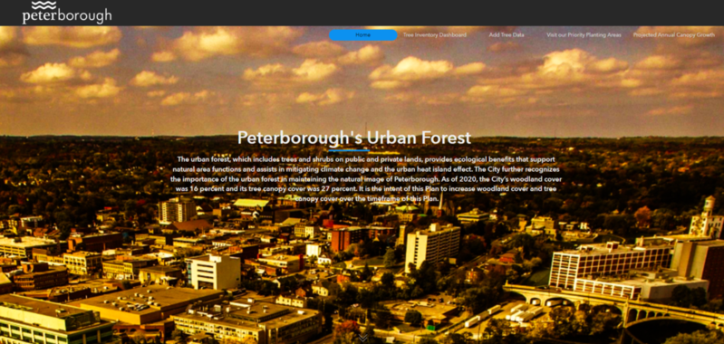

Engaging & User-Friendly Tree Data Visualization

ArcGIS Experience Builder provides a customizable, user-friendly, and interactive platform for presenting tree data in an engaging manner. Its ability to integrate various datasets, create rich visualizations, and incorporate interactive components makes it an ideal solution for addressing the reality that tree data is not presented in an interesting, attractive and functional manner.